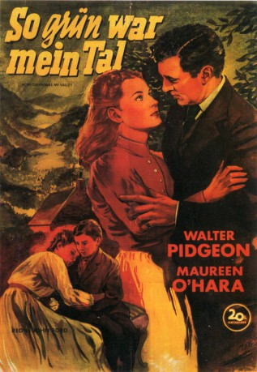
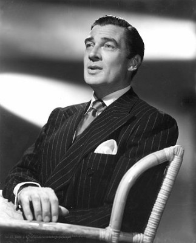
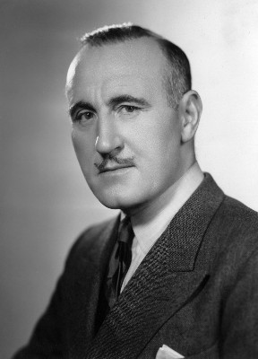
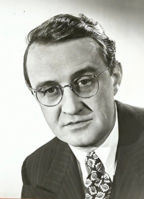
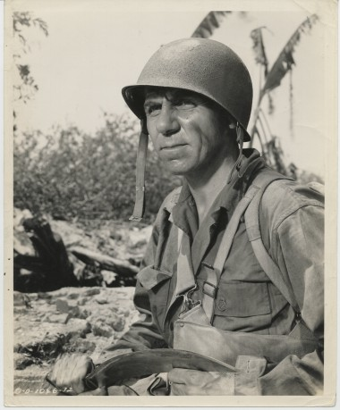

#10766 So grün war mein Tal
Alternativ: How Green Was My Valley (Englischer Titel)
Auszeichnungen: 5 Oscars gewonnen für 5 Oscars nominiert
 
 IMDB-Wertung: 7.8 / 10
IMDB-Wertung: 7.8 / 10  Metascore: 0
Metascore: 0 
Der Film erzählt die Geschichte der Familie Morgan, die Ende des 19. Jahrhunderts im Süden von Wales ein einfaches, aber zufriedenes Leben führt. Doch die Idylle findet ein jähes Ende, als man im Tal Kohlevorkommen entdeckt, denn schon bald entbrennt zwischen der Dorfgemeinschaft und den skrupellosen Grubenbetreibern ein rücksichtsloser Interessenkampf. In Rückblicken erzählt der 60-jährige Huw Morgan wie er als kleiner Junge nicht nur das Leben seiner Eltern, sondern auch sein eigenes von Grund auf veränderte...
Jahr: 1941
Dauer: 118 Minuten
FSK: 12
Land: USA Studio: 20th Century FoxTonspuren: DTS - ,
Untertitel: Deutsch,
Auflösung: 1080p (1440x1080) Größe: 16179 MB
Genre: Drama, Familie
Regisseur: John Ford
Drehbuch: Philip Dunne, Richard Llewellyn
Soundtrack: Alfred Newman
Darsteller:
-  Walter Pidgeon als Mr. Gruffydd
 Maureen O'Hara als Angharad
Maureen O'Hara als Angharad Anna Lee als Bronwyn
Anna Lee als Bronwyn-  Donald Crisp als Mr. Morgan
 Roddy McDowall als Huw
Roddy McDowall als Huw- John Loder als Ianto
- Sara Allgood als Mrs. Morgan
- Barry Fitzgerald als Cyfartha
- Patric Knowles als Ivor
- Morton Lowry als Mr. Jonas
-  Arthur Shields als Mr. Parry
- Ann E. Todd als Ceinwen
- Frederick Worlock als Dr. Richards
- Richard Fraser als Davy
 Rhys Williams als Dai Bando
Rhys Williams als Dai Bando- Ethel Griffies als Mrs. Nicholas
 Gertrude Astor als Bit Part (uncredited)
Gertrude Astor als Bit Part (uncredited) Frank Baker als (uncredited)
Frank Baker als (uncredited) Ruth Clifford als Village Woman (uncredited)
Ruth Clifford als Village Woman (uncredited) Herbert Evans als Postman (uncredited)
Herbert Evans als Postman (uncredited) Mary Field als Eve (uncredited)
Mary Field als Eve (uncredited)- Pauline Garon als Bit Part (uncredited)
- Mary Gordon als Gossiper (uncredited)
- Gibson Gowland als Bit Part (uncredited)
 Louis Jean Heydt als Miner (uncredited)
Louis Jean Heydt als Miner (uncredited) Mae Marsh als Miner's Wife (uncredited)
Mae Marsh als Miner's Wife (uncredited)- Irving Pichel als Huw Morgan as an Adult (uncredited)
- Clifford Severn als Mervyn (uncredited)
-  Robert B. Williams als Minor Role (uncredited)
- Welsh Singers als Singers
- Evan S. Evans als Gwilym
- James Monks als Owen
- Lionel Pape als Evans
- Marten Lamont als Iestyn Evans
- Stewart Bair als Minor Role (uncredited)
- Robert Bradford als Bit Part (uncredited)
- Cyril Clare als Minor Role (uncredited)
- Leonard Clare als Minor Role (uncredited)
- Phillip Dare als Bit Part (uncredited)
- Edward Davies als Bit Part (uncredited)
- Helen Davies als Minor Role (uncredited)
- Minta Durfee als Bit Part (uncredited)
- Jack Griffiths als Minor Role (uncredited)
- Ben Hall als Bit Part (uncredited)
- Gwilym Isaac als Minor Role (uncredited)
- Ellis James als Minor Role (uncredited)
- Alice A. Jones als Minor Role (uncredited)
- Arvonia Jones als Minor Role (uncredited)
- David Jones als Minor Role (uncredited)
- Emlyn Jones als Minor Role (uncredited)
Datei: X:\1900-1949\So grün war mein Tal (1941, FSK12, 1440x1080).mkv seit 22.02.2019
Festplatte: Gemischt-01+Anime
 Es gibt insgesamt 80 Filme in der Gruppe '1900-1949'
Es gibt insgesamt 80 Filme in der Gruppe '1900-1949'